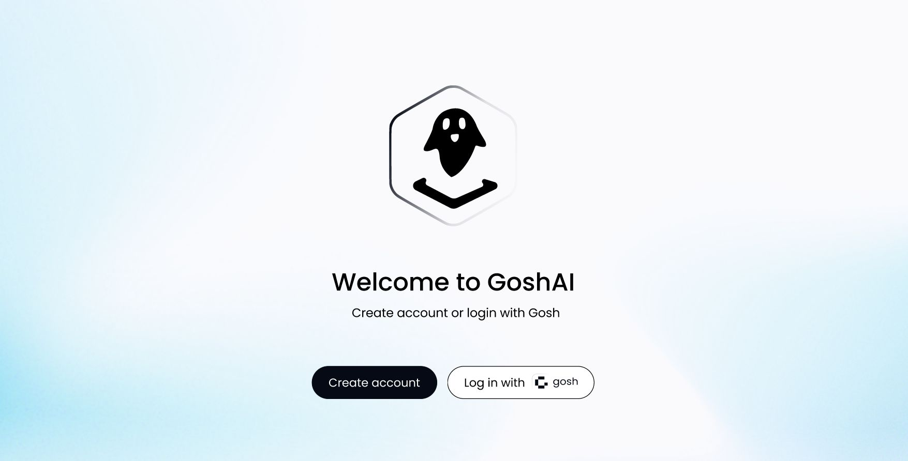
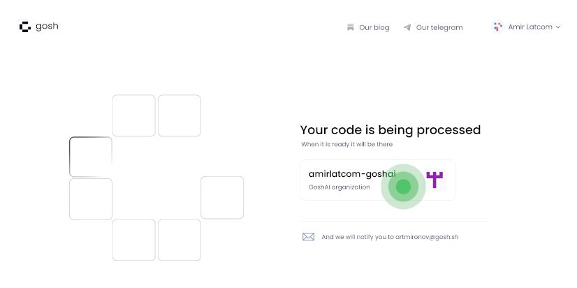
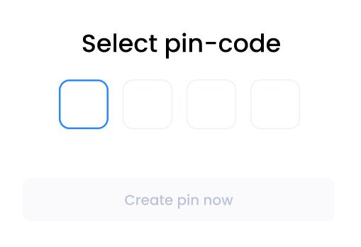
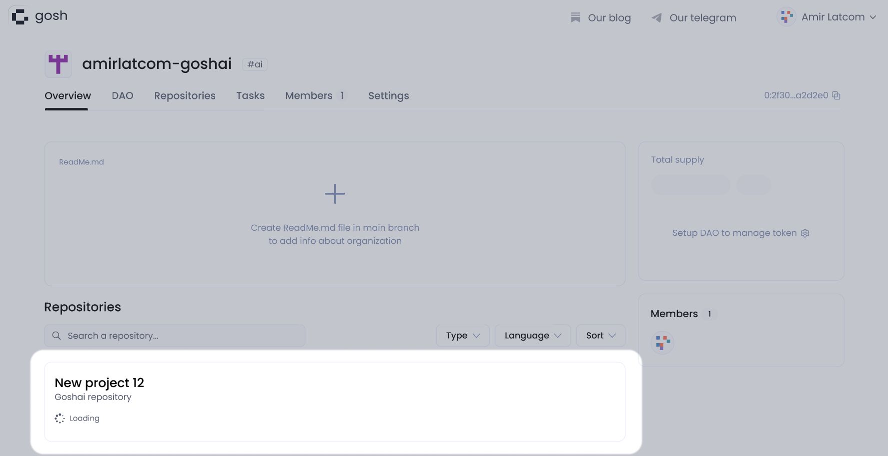
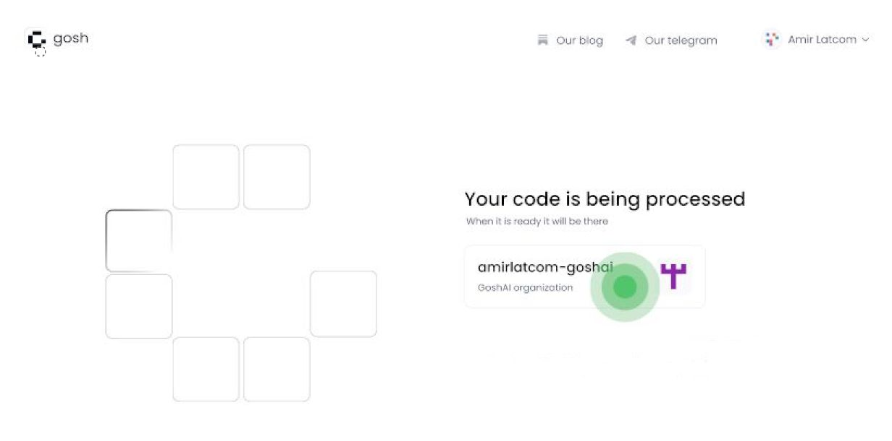
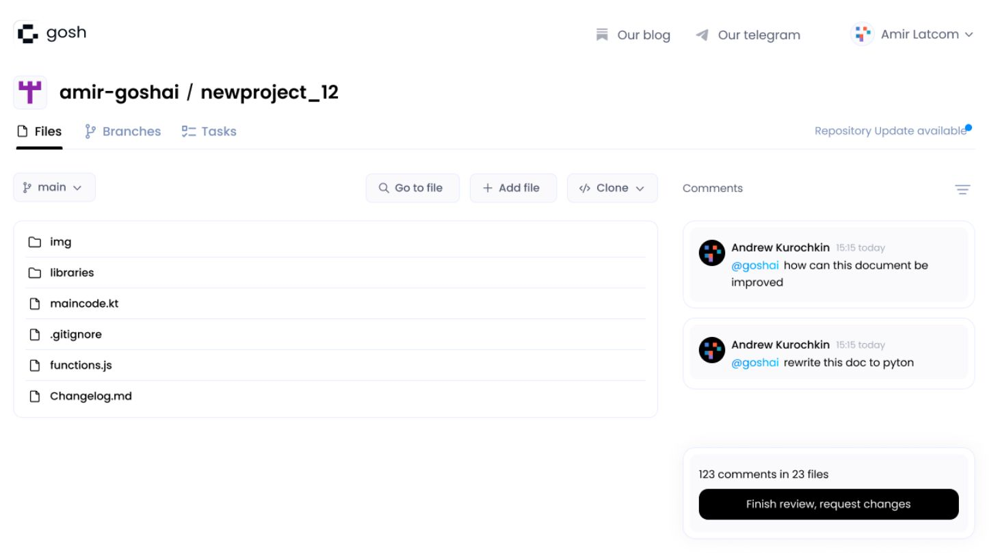
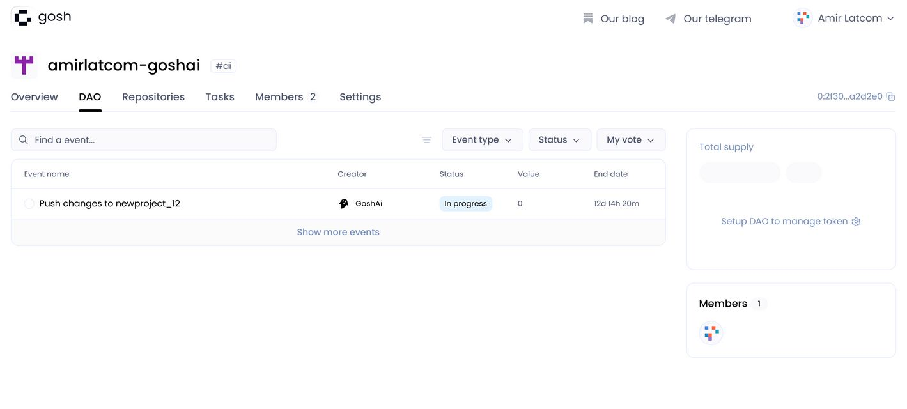
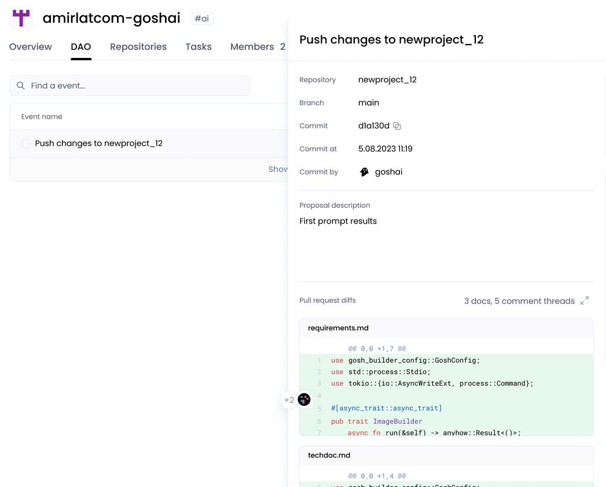
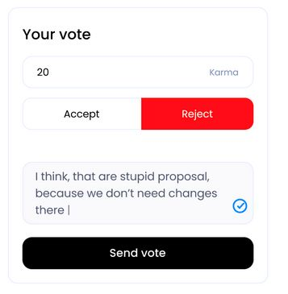

GOSH.AI
Overview
GOSH.AI will help you simplify the workflow of writing code.
Info
GOSH.AI only supports code for asynchronous Solidity at the moment
Now one person with technical knowledge can manage and deliver complex software in very little time.
GOSH.AI will create all project files in the repository on the blockchain and write code, tests and deploy scripts.
The generated code is immutable, has timestamps and is stored in a decentralized way.
Working with GOSH.AI
Start your acquaintance with GOSH.AI from this page
Click the button Try GOSH AI

If you already have a GOSH account, then go here:
If you are a new user, follow these instructions:
start for new users
If you haven't a GOSH account, then click Create account

To start with GOSH.AI we need a Spec.md file with a description of your project.
You can upload and edit later it by clicking on Attach Spec.md file
or create in the form that opens

Then a form for sending an prompt is activated on the right.
Enter the name of the repository that will be created after processing the request.
You can also specify an email address (an email will be sent to it after the repository is downloaded)

After sending the prompt, the bot GOSH.AI will create the DAO for you, where your repository will be uploaded.
You can go to your GOSH.AI organization by clicking on it

Create a PIN code to log in to GOSH.AI

After uploading the repository, you can continue working with it

start for GOSH users
If you are a GOSH user, then click Log in with GOSH
and enter your seed phrase

To start with GOSH.AI we need a Spec.md file with a description of your project.
You can upload and edit later it by clicking on Attach Spec.md file
or create in the form that opens
Then a form for sending an prompt is activated on the right.
Select an organization or create new

and enter the name of the repository that will be created after processing the request.
Then click Develop code

After sending the prompt, the bot GOSH.AI will create the DAO for you, where your repository will be uploaded.
You can go to your GOSH.AI organization by clicking on it

Create a PIN code to log in to GOSH.AI
After uploading the repository, you can continue working with it

working with the result
After creating and processing the repository, you can enter into it and see what happened
You can view the received files, leave comments on the files.
After reviewing the files, send them to GOSH.AI for processing click by Finish review, request changes

after processing the comments, GOSH.AI creates a proposal with the modified files
You can view the event on the DAO tab:

Check out the results of GOSHA's work

If you are not satisfied with the result of the work, then you can comment on the diffs

in the section Your vote select Reject and write a comment on the vote
Warning
the voting comment must contain a certain number of characters.
then click Send vote

GOSH.AI will make changes to the code taking into account the comments.
Info
You can return to the repository, leave comments and create suggestions until you are satisfied with the result.
When the result of GOSH.AI work fully satisfies everyone, you can accept proposal

After accepting the proposal, you will receive a ready-made code.